Creating Project and Design Pattern
In this session we will create the project directory the solution and each solution layer.
Creating project directory
To create our project we will use here Visual Studio 2019 Community. It is not the obligatory tool you can use for example Visual Studio Code or other as you wish. To get started, let's create 2 directories. the source directory where will be the main project and tests where will be the unit test project see in the unit test session later the tests applied to our project here.
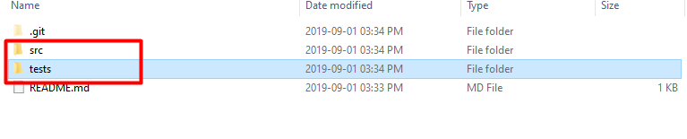
Starting visual studio let's create a new blank solution. Initially creating on the create new project button.
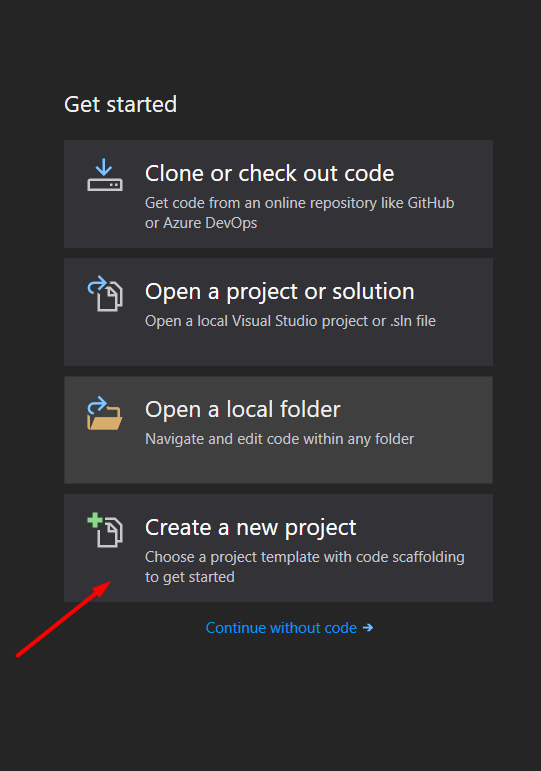
Now let's create a blank solution. You can type blank in the filter field to speed up the process.
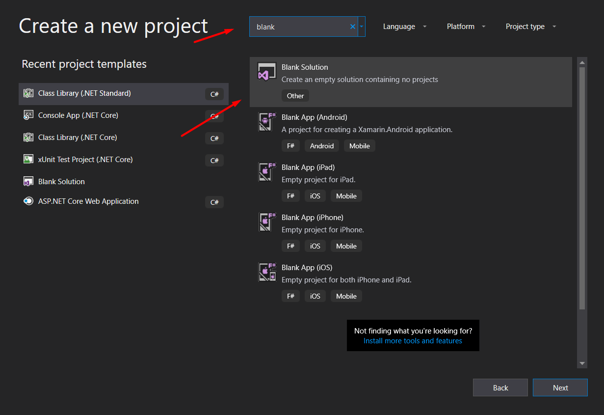
Next we will choose the source directory we created to generate our solution and give our solution a name. I'll call her "rodolfo.schmidt"
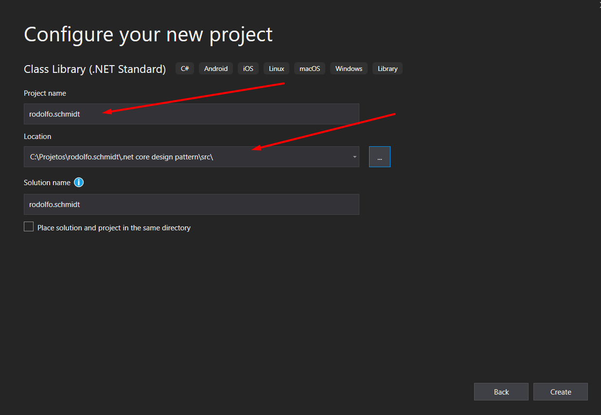
The solution must be created blank, if you unintentionally create a project simply remove the automatically created project from the directory and remove it from the solution. Your solution should be as follows.
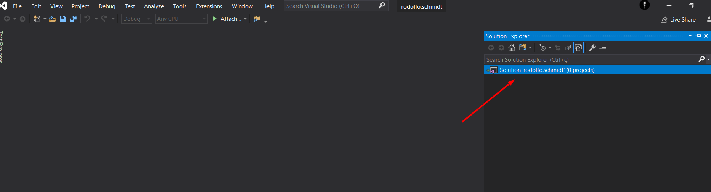
Creating the layers
Now let's create the layers of our architecture. It is important to remember that here is just an architectural proposal in which you have complete freedom to adapt to the needs of your project. Right clicking on the solution will create a .net core class library for the generation of layers with the exception of the api layer as we will see below.
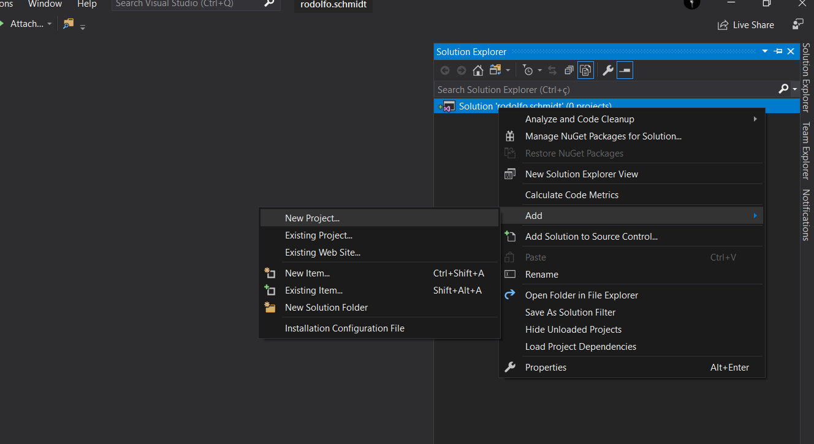
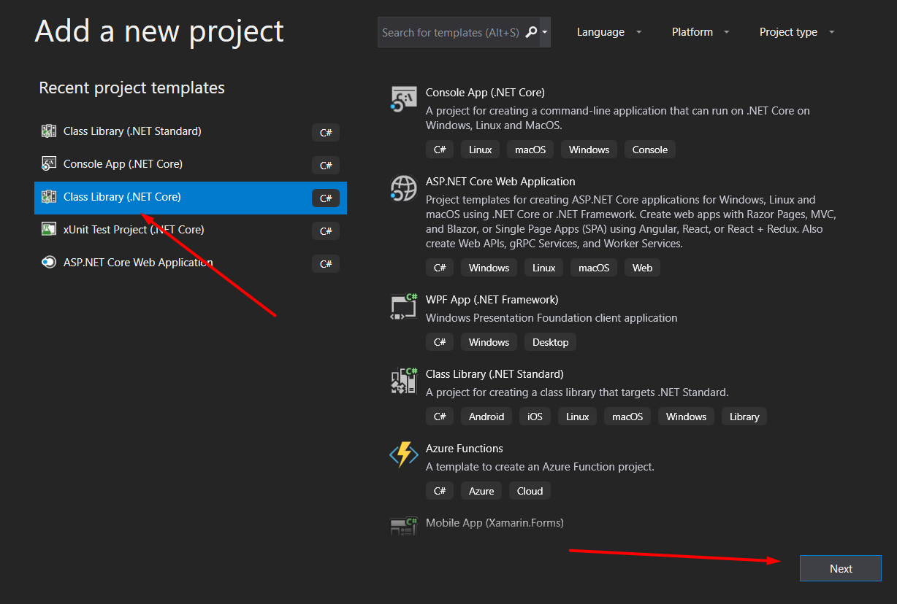
Let's start with the dependency injection layer in which to choose to use the "Cross Cutting" pattern thinking about the scalability of the project.
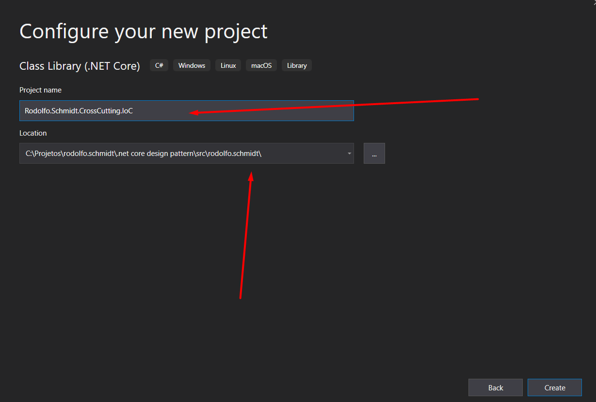
The same procedure you should repeat for the layers "Rodolfo.Schmidt.Domain", "Rodolfo.Schmidt.Data" and "Rodolfo.Schmidt.Application" like this
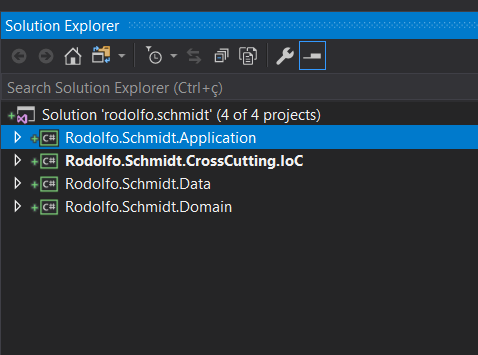
E agora vamos criar a camada da api e vamos falar dela com detalhes na sessão da criação da api here. Below example of how to create the api layer
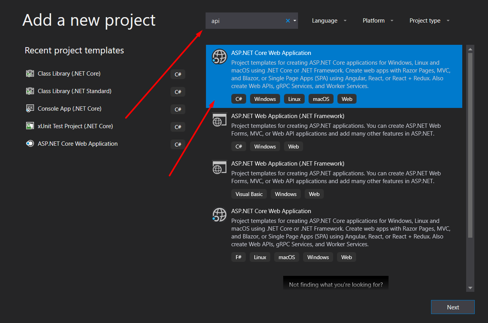
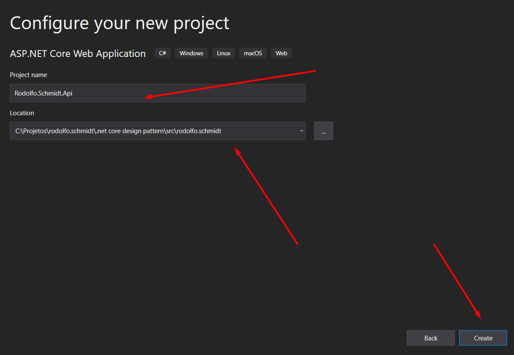
For our project we will use the following settings in the version below
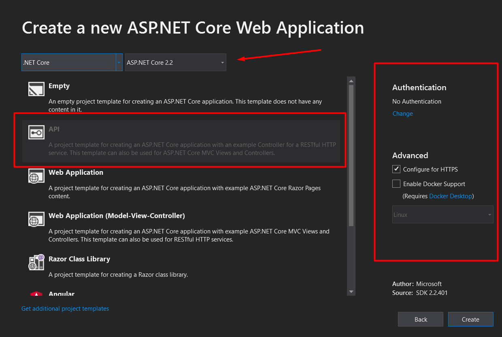
And now let's get our test project created and finalize our architecture. To create the test project we follow the same path we learned earlier by selecting the xUnit project. Let's use the xUnit testing framework here. You can use MSTest or one of your own.
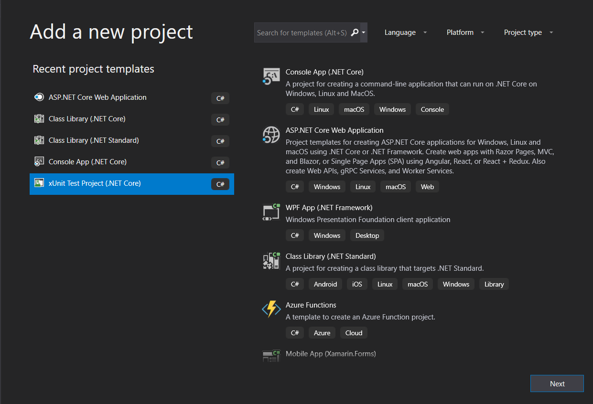
The default name is the same just let's change the directory to the test directory we created it at the beginning.
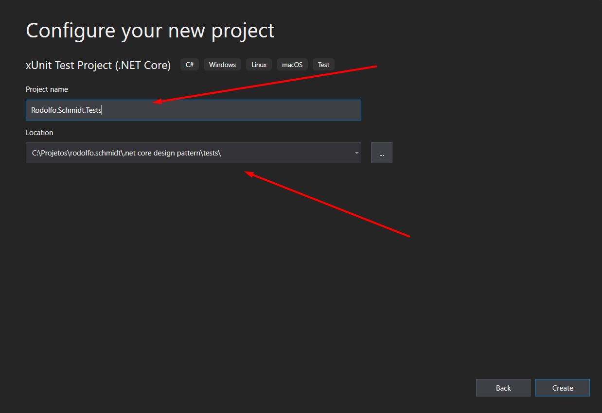
And finally we arrive at the desired architecture. Now just follow in the following sessions teaching you how to create layer by layer. Always remembering what we are working on here is on my available github. here
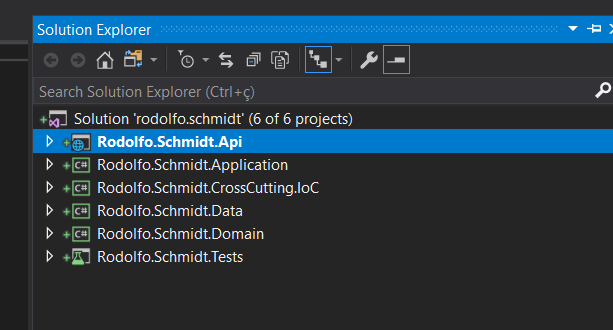